완료는 보고가 아니라 근거로 판단합니다
- 운영에서
- 고객이 말한 문제를 프로세스, API 통신, 로그로 직접 좁혔고 주문 이슈는 서버 시세와 API 수신 데이터를 대조해 검증했습니다.
- AI와 함께
- 게시 성공 보고에도 자료를 찾을 수 없어 완료 기준을 “홈에서 본문까지 읽기”로 바꿨고 가이드 작성은 검사 결과를 근거로 마무리하게 했습니다.
안녕하세요, 유승철입니다
금융거래 플랫폼을 8년간 운영하며 익힌 확인과 기록의 습관으로 AI의 결과를 검토합니다.
퇴사 후 클라우드·네트워크 과정을 수강하며 진행하는 개인 학습입니다.
이 프로젝트는 AI로 운영 프로세스를 강화하려고 제작했습니다.
Working Style
장애를 확인하고 기록할 때 처리하던 방식이 AI의 결과를 검토하는 기준이 됐습니다.
각 방식을 실제 경험과 사례로 보여드립니다.
AI 활용 개인 프로젝트
학습 자동화와 프로세스 개선 프로젝트에서 겪은 일을 세 가지 사례로 나눴습니다.
완성된 서비스 소개가 아니라, 직접 쓰면서 이슈를 발견하고 AI의 결과를 검토한 과정입니다.
흩어진 학습 메모를 AI로 분석·분류하고 제가 확인한 뒤 Notion 지식베이스에 올리는 자동화입니다.
게시 성공 보고를 받았지만 홈과 해당 분야에서 자료를 찾을 수 없었습니다.
완료 기준을 “홈 → 분야 → 본문 읽기”로 바꾸고 실제 동선까지 확인하게 했습니다.
홈의 분야별 자료 수, 자료별 정리, 개념 찾아보기에서 본문까지 이어집니다.
저장에 성공했는지보다 사용자가 실제로 찾아 읽을 수 있는지를 먼저 확인합니다.
근거와 상세 내용 보기 →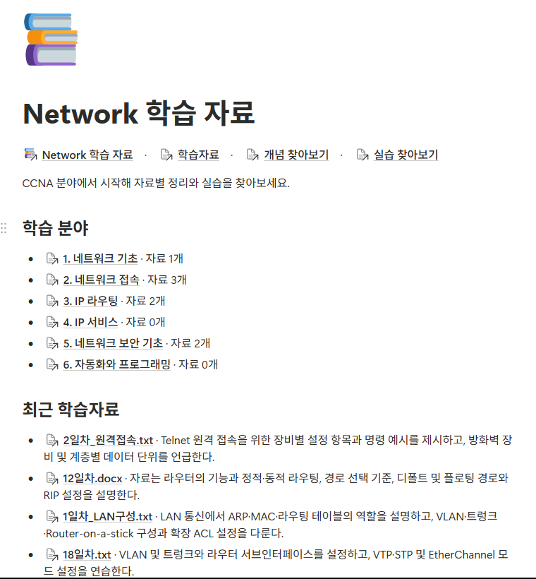
여러 AI가 함께 일할 때 누가 무엇을 맡고 결과를 어디에 남기는지 구조부터 나눈 사례입니다.
프롬프트와 결과를 제가 AI 사이에서 복사해 옮겼고, 개선할 곳과 시험할 곳의 기록이 섞이기 시작했습니다.
개선 원본과 독립 시험 프로젝트를 나누고, 마스터 AI가 담당에게 전달하고 회수하도록 역할을 정했습니다.
마스터 1개가 담당 6개에게 위키 작성과 검토를 나눠 맡긴 소규모 시험을 통과했습니다. 위키는 6개 분류로 다시 정리했습니다.
맡을 사람과 기록할 곳이 정해져야 AI를 늘려도 일이 섞이지 않습니다.
근거와 상세 내용 보기 →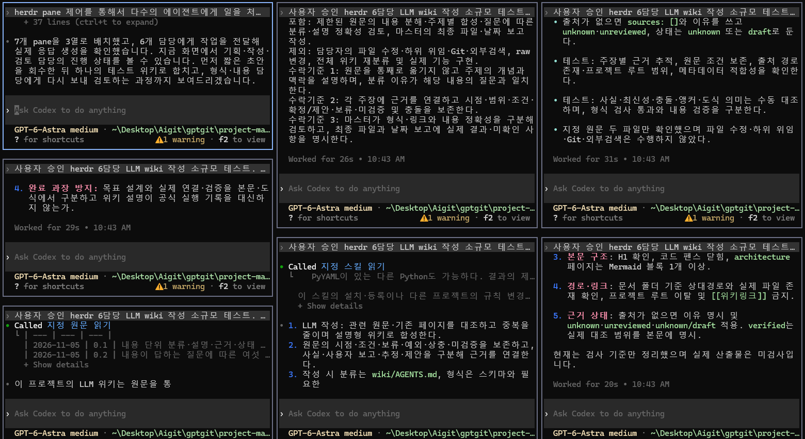
여러 AI에게 일을 맡기며 실행과 사용량이 늘어날 때, 무엇을 사람이 정하고 무엇을 규칙으로 처리할지 기준을 세운 사례입니다.
제가 같은 지시를 31번 다시 했고, 여러 AI 시험에서는 담당 6개가 모두 마스터용 모델로 실행됐습니다. 두 경우 모두 AI가 일을 어떻게 처리할지 기준이 모호했습니다.
다시 지시한 내용을 살펴보니 처리 규칙이 모호했습니다. 비용·범위·공개 결정은 사람이 남기고, 나머지는 처리 규칙을 분명히 정하기로 했습니다.
역할별 모델 규칙과 시작 전 검사를 적용해 담당 모델을 매번 확인하던 일을 없앴습니다. 마스터용 모델로 담당을 시작하면 훅이 실행 전에 막습니다.
처리 기준이 분명하면 같은 지시를 반복하지 않아도 되고, 검증은 줄이지 않습니다.
근거와 상세 내용 보기 →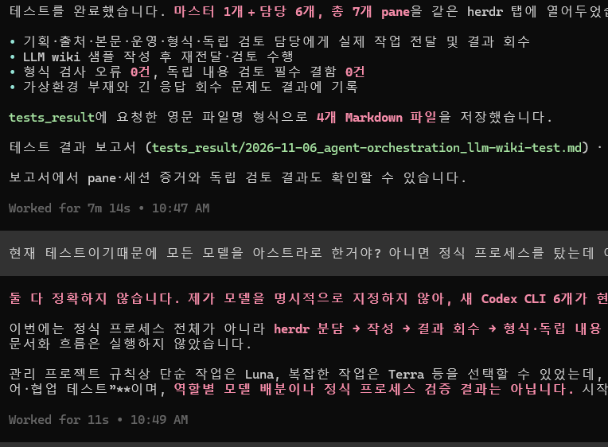
세 사례 모두 AI의 보고를 그대로 받지 않고 던진 질문에서 방향이 바뀌었습니다. 그 질문들과 지금 위치를 정리했습니다.
저장 성공만 검사하고 있었습니다. 완료 기준을 홈 → 분야 → 본문까지 읽기로 바꿨습니다. CASE 01
코드 품질 대신 제 결정 지점과 비용을 기준으로 점검했습니다. 짧은 재지시 31건 중 약 16건은 규칙으로 없앨 수 있다고 봤습니다. CASE 03
AI가 개선 위치를 시험 프로젝트로 옮긴다고 기록한 것을 바로잡고 두 프로젝트의 역할을 나눴습니다. CASE 02
모델을 지정하지 않아 기본 설정을 이어받은 것이었습니다. 시험 결과를 바로잡아 기록하고 역할별 모델을 규칙과 시작 전 검사로 강제했습니다. CASE 03
더 나은 결과는 더 긴 프롬프트보다 완료 기준, 역할, 검증 근거를 먼저 물을 때 나왔습니다.
CASE 01 · 사용자 관점의 완료 기준 · 학습 자동화
네트워크 학습 자료를 AI로 분석·분류하고 제가 확인한 결과를 Notion에 올리는 프로그램입니다.
게시 성공 보고를 받고도 자료를 찾지 못한 일을 계기로 완료 기준을 사용자의 동선으로 바꿨습니다.
확인 파일과 실행 기록에서 직접 봄측정 조건 수치마다 범위를 함께 표시수치 출처: 작업기록(~2026.10.22), 작업 효율 리뷰·재설계 기록(~2026.10.29), 화면 캡처(2026.11.06)
Project-StudyAutomanage가 기준 프로그램이고 일반 사용자용 실행본까지 분리했습니다.
이후 제게 필요한 흐름만 남기기로 결정해 Project_Refactor의 별도 사본에서 간소화 재설계를 시험하고 있습니다.
요구사항 정의서로 범위를 먼저 고정했습니다.
핵심 질문은 “OSPF.docx가 어디 있는가”에서 “OSPF를 이해하려면 어떤 자료가 있는가”로 찾는 방식을 바꾸는 것입니다.
| 항목 | 정의한 내용 |
|---|---|
| 핵심 흐름 | 기존 학습자료 → AI 분석 → 지식 단위 재구성 → Notion 지식베이스 → 신규자료 지속 반영 |
| 원본 보존 | 원본 파일을 기준으로 삼고 프로그램이 수정하지 않습니다. AI 결과는 원본과 분리해 관리합니다. |
| 사람의 확인 | AI는 분류를 추천하고 확인을 거친 결과만 Notion에 반영합니다. |
| 범위 | TXT와 DOCX, NETWORK 분야. 화면 분류는 공식 학습 범위인 CCNA v1.1을 기준으로 합니다. |
| 제외 | 학습 진도 관리, 원본 수정, 기존 폴더 구조를 그대로 옮기는 방식 |
CCNA 분야 6개와 분야별 자료 수, 최근 학습자료를 한 화면에서 봅니다.
분야 또는 학습자료 목록에서 자료별 핵심 정리와 분류를 봅니다.
개념을 고르면 그 개념이 나오는 자료로 이동합니다.
여기까지 실제로 도착해야 게시 완료로 판단합니다.
이미지를 누르면 화면 가운데에 크게 열립니다.
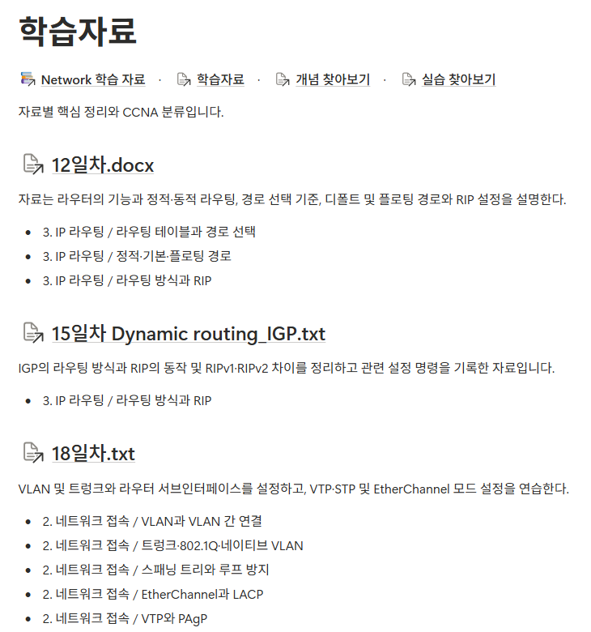
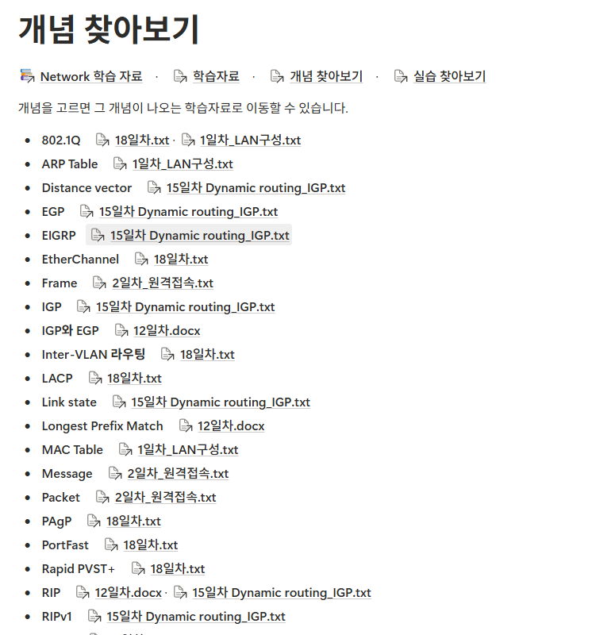
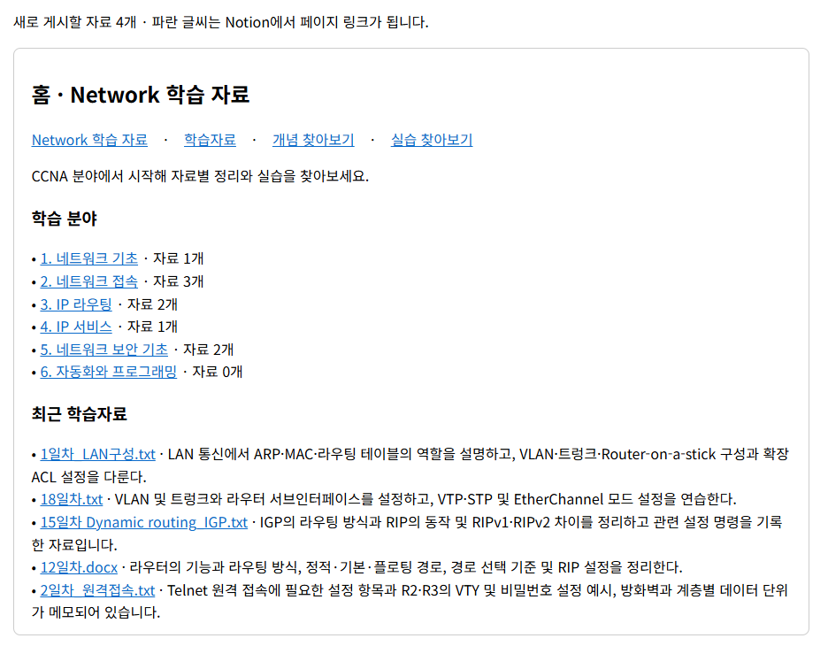
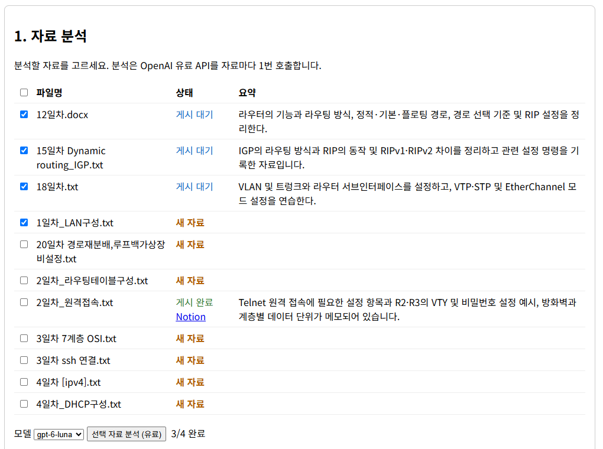
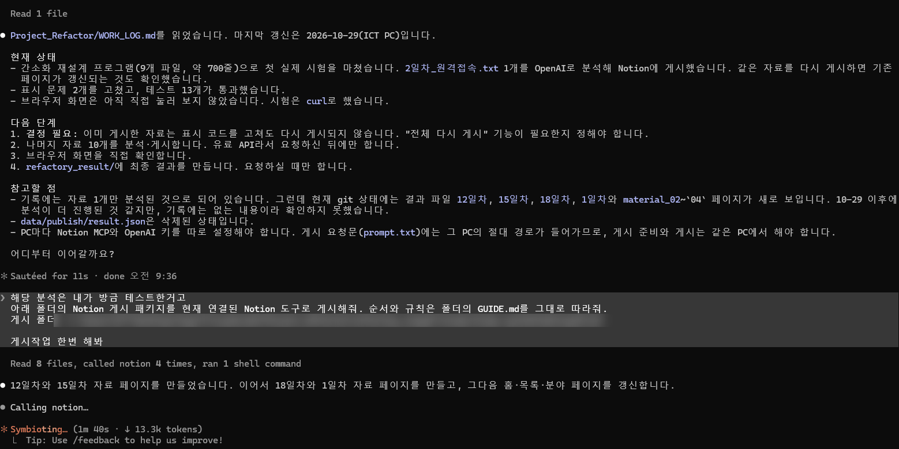
게시 횟수와 속도처럼 비용과 관련된 개선도 함께 정리했습니다.
| 상태 | 개선 내용 | 결과 또는 완료 기준 |
|---|---|---|
| 완료 | 홈과 분야 반영 누락 수정, 완료 기준에 접근 경로 포함 | 10.20 원본·승인·게시 자료 10건까지 진행. 미완료 전송과 불명확한 내부 링크 0 |
| 완료 | 불필요한 재승인과 보류 재발 제거 | 복사 DB 기준 재승인 4 → 0건, 동일 사유 보류 재발 1 → 0건 |
| 완료 | 유효한 결과 재사용, 요청 한도, 자동 재시도 제한 | 변경이 없는 페이지의 재조회는 줄이고 원본 변경 감지와 중복 게시 확인은 유지 |
| 완료 | 사용자용 코드의 반복 계산 축소 | 승인 목록 0.124 → 0.040초(3회 중앙값, 승인 11건), DB 연결 16 → 2회, 반환값 해시 동일 |
| 시험 중 | 필요한 흐름만 남긴 간소화 재설계(AI 분석은 자료마다 1회 호출, 자동 재시도 없음) | Python·HTML 34개 파일 약 5,900줄 → 9개 파일 965줄. 테스트 13개 통과. 11.06 자료 4건을 추가로 분석해 게시했고 화면 기준 5건이 보입니다. |
| 다음 | 이미 게시한 자료를 다시 게시하는 기능 필요 여부 결정 | 현재는 표시 코드를 고쳐도 기존 페이지가 바뀌지 않아 게시 기록을 비우는 우회만 가능 |
| 다음 | 나머지 자료 분석·게시(유료라 별도 허용 후 진행) | 긴 자료에서 출력 한도 8000토큰이 충분한지 확인 |
| 이후 | 재설계 결과를 최종본으로 정리하고 채팅 AI 중계 없는 자동 게시 검토 | 인증 방식과 접근 범위를 정한 뒤 진행. 자동 승인과 무인 게시는 허용하지 않은 상태 |
CASE 02 · 프로젝트 구조와 협업 방식 · project-management · project-prototype
여러 AI가 함께 일하려면 누가 무엇을 맡고 결과를 어디에 남기는지가 먼저 정해져야 했습니다.
개선하는 곳과 시험하는 곳을 나누고, 마스터 AI가 담당에게 일을 나눠 맡기는 구조를 만들어 시험했습니다.
확인 파일과 실행 기록에서 직접 봄수치 출처: 점검 보고서(2026.10.29), 작업기록·위임 보고·시험 보고(~2026.11.06)
2026년 10월 13일 역할 정의에서 시작한 개인 학습 프로젝트입니다.
11.04에 개선 원본과 시험 프로젝트를 나눴고, 11.06에는 herdr에서 마스터 1개와 담당 6개로 소규모 시험을 했습니다.
10.29 점검에서 사람이 AI 사이를 손으로 잇는 구간과, 실행 방식에 따라 지침이 빠지는 문제를 확인했습니다.
담당을 늘리기 전에 프로젝트와 역할, 기록 위치부터 정하기로 했습니다.
| 위치 | 역할 | 넣지 않는 것 |
|---|---|---|
| 공통(gptgit) | 공통 AI 규칙, 공유 위임 스킬, 모델 검사 도구 | 프로젝트별 역할과 상세 기록 |
| project-management | 프로세스 개선의 논의, 설계, 검증, 작업기록 원본 | 개별 프로젝트의 소스와 상세 실행 기록 |
| project-prototype | 개선된 프로세스를 독립적으로 적용하는 시험 | 관리 작업의 이력, 보류, 세션, 설치 경로 |
| 역할 | 책임 | 금지 |
|---|---|---|
| 마스터 | 사용자 창구, 담당 전달·회수, 근거 대조와 통과 판정 | 근거 없는 완료 판정, 범위와 비용 임의 확대 |
| Codex 기획 | 요구사항을 설계, Task, 시험 조건에 연결 | 승인 없는 요구사항 변경 |
| Claude 기획 검토 | 고정된 기획서의 누락, 충돌, 실행 가능성 지적 | 원본 직접 수정 |
| Claude 개발 | 승인된 Task 제작과 자체 시험 | 자기 결과 최종 승인 |
| 독립 QA | 제작자와 다른 세션에서 실제 사용 시험 | 제작자의 성공 보고로 시험 대체 |
| Hermes 문서화 | 검증된 결과로 작업기록·위키 초안 작성 | 근거 밖 사실과 완료 상태 추가 |
한 파일에는 한 시점에 한 작성자만 둡니다. 검토 담당은 제작 파일을 고치지 않습니다.
담당은 자기 Task와 필요한 원본만 받습니다. 작업기록 탐색은 마스터가 맡습니다.
마스터 탭은 나누지 않고 담당은 새 탭에서 시작합니다(11.06).
실행별 상태와 근거는 실행 기록에, 짧은 최신 인계는 작업기록에, 설명은 위키에 둡니다.
구조와 협업에 관련된 폴더만 추렸습니다.
시험 프로젝트에는 관리 작업의 이력과 PC 경로를 넣지 않습니다.
gptgit/ ├─ AGENTS.md # 공통 규칙: 역할별 모델, 위임 기준 ├─ skills/delegation-reporting/ # 담당 위임과 보고 공유 스킬 ├─ tools/ │ ├─ check_agent_model.py # 역할별 허용 모델 검사 │ ├─ start_managed_agent.py # 담당 시작 │ └─ agent_model_hook.py # 금지 모델 시작 명령 차단 훅 │ ├─ project-management/ # 개선 원본 │ ├─ docs/04_records/management_log.md # 최신 인계와 남은 업무 │ ├─ report_docs/ # 날짜별 위임 보고 │ ├─ tests_result/ # 시험 결과(11.06 herdr 6담당) │ ├─ skills/wiki-editor/ # 위키 편집 기준·스키마·검사기 │ ├─ wiki/ # features · architecture · decisions │ │ # operations · log · index │ └─ raw/ # 과거 원문 보관(수정 안 함) │ └─ project-prototype/ # 독립 시험 ├─ docs/workflow.md # 기획 검토·개발 QA·문서화 순서 ├─ docs/context-and-agents.md # 최소 입력·병렬 작업·인계 ├─ docs/records/work_log.md # 자체 작업의 최신 인계 ├─ templates/ # 작업명세서 · 개발기획서 · Task 입력 ├─ tools/ # 역할 시작기 · 전달 도구 · 상태 원장 └─ wiki/ # 같은 6분류 위키
| 담당 | 맡은 일과 회수 결과 |
|---|---|
| 마스터 | 배치, 담당 시작, 작업 전달, 원문 대조, 샘플 작성, 검사와 최종 통합 |
| wiki-plan | 목적, 포함·제외, 수락 기준 3개 제안 |
| wiki-sources | 주장별 근거 연결, 출처 경로, 상태 보존 기준 |
| wiki-draft | 원문 보관과 설명의 차이, 내용 합성에 관한 초안 |
| wiki-ops | 작성 → 형식 검사 → 내용 검토 흐름과 검사 한계 |
| wiki-format | 필수 검사 5개, 샘플 형식 검사 실행(오류 0) |
| wiki-review | 독립 검토 기준 4개, 샘플과 원문 3개 대조(필수 결함 0) |
Claude가 만든 작은 함수를 GPT가 별도로 실행해 같은 결과를 확인했습니다.
| 입력 | 예상값 | Claude 자체 실행 | GPT 별도 실행 | 판정 |
|---|---|---|---|---|
| [1, 2, 3, 4] | 6 | 6 | 6 | 통과 |
| [] | 0 | 0 | 0 | 통과 |
| [-4, -3, -2, 1, 2] | -4 | -4 | -4 | 통과 |
2026년 11월 6일에 캡처한 herdr와 Obsidian 화면입니다.
이미지를 누르면 화면 가운데에 크게 열립니다.
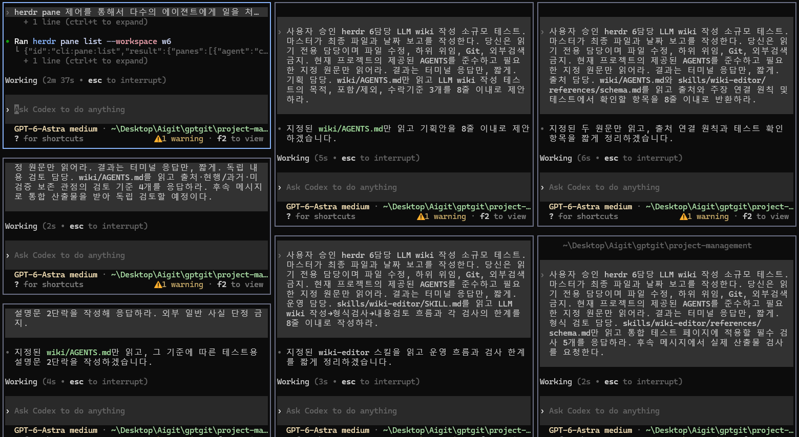
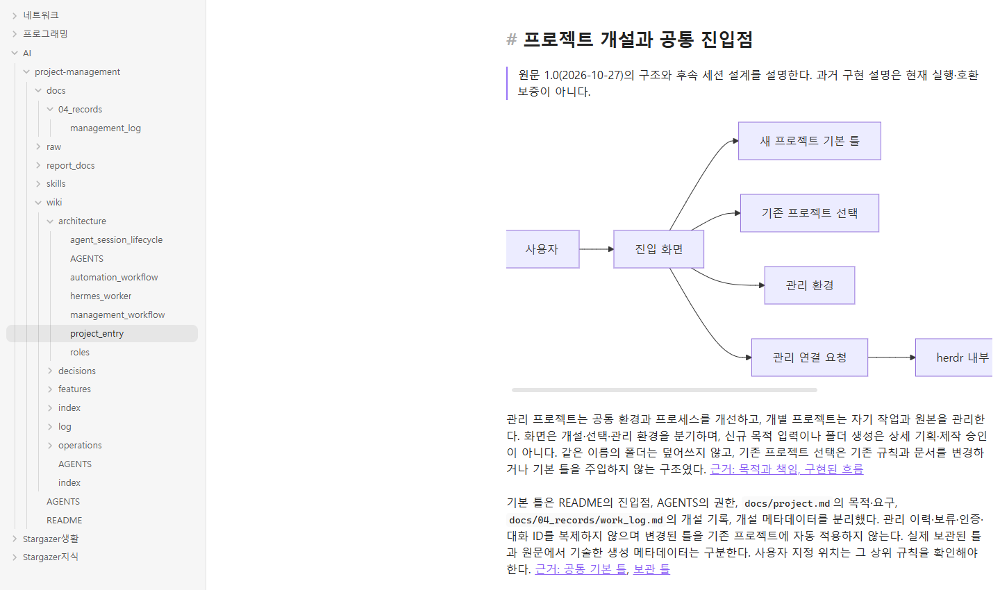
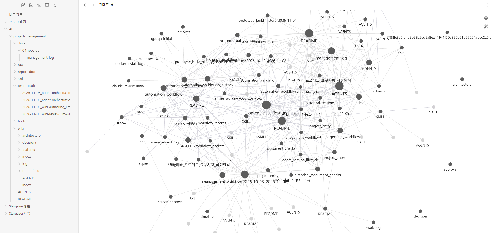
구조와 규칙은 갖췄지만 실제 모델을 연결한 전체 완주는 아직입니다.
남은 작업은 시험 프로젝트에서 실행하고, 막히면 개선 원본으로 가져와 고칩니다.
| 상태 | 개선 내용 | 결과 또는 완료 기준 |
|---|---|---|
| 완료 | 개선 원본과 독립 시험 프로젝트 분리(11.04) | 시험 프로젝트에서 관리 프로젝트명·PC 경로 참조 0건. 모의 시험 46개 중 45개 통과(symlink 권한 부재 1개 제외) |
| 완료 | 위키를 내용별로 다시 정리(11.05) | 20개 문서, 원문 40개 항목 대응, 상대 링크 271개 누락 0. Obsidian 표시는 화면 캡처로 확인 |
| 완료 | herdr 마스터 1 + 담당 6 소규모 시험(11.06) | 실제 응답 회수, 형식 검사 오류 0, 독립 내용 검토 필수 결함 0. 같은 모델의 별도 세션 검토 |
| 완료 | 시험 프로젝트에 위키 기준·스킬·위임 규칙 적용(11.06) | 위키 검사기 회귀 17건 통과, 기존 도구·시험 13개 파일 변경 없음(SHA-256 일치) |
| 다음 | 담당 제어 실검증: 명시 모델 → 새 탭 시작 → 최소 Task 전달 | 시험 프로젝트 전달 도구의 실제 전달은 아직 실행하지 않음 |
| 다음 | 기획 작성↔검토, 개발↔독립 QA 반복 검증 | 별도 세션에서 실제 시험, 결함 반환, 수정, 재시험까지의 근거 |
| 이후 | Hermes 문서화 연결과 전체 프로세스 완주 | 작은 신규 명세 하나로 요구사항부터 문서화까지 단계별 근거 확보 |
CASE 03 · 비용과 검증 범위의 조정 · project-management · project-prototype
여러 AI에게 일을 나눌수록 다시 하는 지시와 읽어야 할 맥락이 함께 늘었습니다.
다시 지시한 내용을 살펴 처리 규칙이 모호한 곳을 찾았고, 규칙과 시작 전 검사로 바꿨습니다. 필요한 검증은 남겼습니다.
확인 파일과 실행 기록에서 직접 봄측정 조건 수치마다 범위를 함께 표시수치 출처: project-management 점검 보고서(2026.10.29), 위임·시험 보고(2026.11.06)
여러 AI에게 일을 나눠 맡기면서 같은 질문을 했습니다.
AI가 일을 어떻게 처리할지 기준이 분명한지, 기준이 모호해서 사람이 계속 다시 지시하고 있는지입니다.
수치는 측정 조건이 서로 달라 직접 비교하거나 절감률로 표현하지 않습니다.
실행을 줄이는 것 자체가 목표는 아닙니다.
10.29 점검에서 세션 기록을 세어 보고, 대상마다 줄일 반복과 계속 유지할 검증을 먼저 나눴습니다.
| 대상 | 줄인 반복 | 유지한 검증 |
|---|---|---|
| 작업 지시 | “작업기록 남겨줘”, “진행해줘” 같은 짧은 재지시(규칙 후보) | 비용, 범위, 외부 공개 결정은 계속 사람이 확인 |
| 맥락 복원 | 매번 읽는 긴 작업기록, 문서마다 되풀이되는 경고 문구 | 최신 인계와 근거 위치는 매번 읽음 |
| 권한 상승 검토 | 반복 실행이 권한 상승 명령을 되풀이하지 않도록 상한(제안) | 보안 검토 자체는 줄이지 않음 |
| AI 문서화 | 같은 작업의 자동 재전송 | 해시·중복 방지·구독 확인. 다시 보낼 때는 새 작업 ID로만 |
| 담당 모델 | 마스터용 모델을 하위 담당에 그대로 쓰는 것 | 복잡한 작업과 독립 검토는 Terra 유지, 실제 모델 확인 후 Task 전달 |
| 역할 | 모델 | 맡는 일 |
|---|---|---|
| 마스터 | GPT-6 Astra | 판단, 지시, 검토, 통합 전용 |
| 단순 작업 담당 | GPT-6 Luna | 간단한 조사와 검사 |
| 복잡한 작업 담당 | GPT-6.1 Terra | 원문 분석, 구현, 독립 검토 |
| Claude·Hermes | 프로젝트별 계약 유지 | 기획 검토·개발, 문서화 |
2026년 11월 6일 병렬 시험 직후의 대화와 작업 화면입니다.
제 질문에서 모델 선택 문제가 드러났고, 같은 날 규칙과 도구로 바꿨습니다.
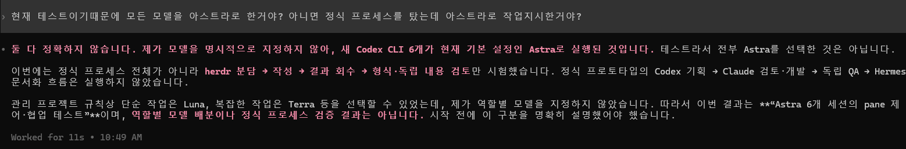
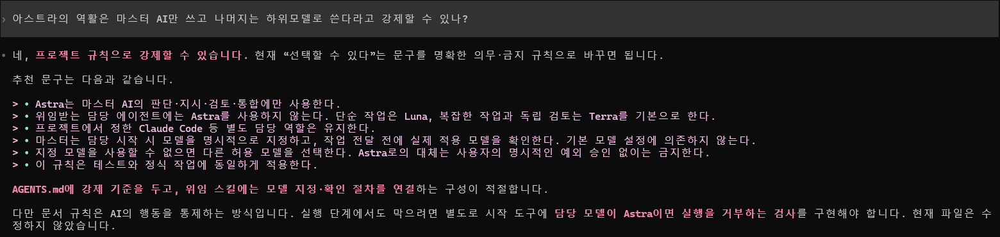
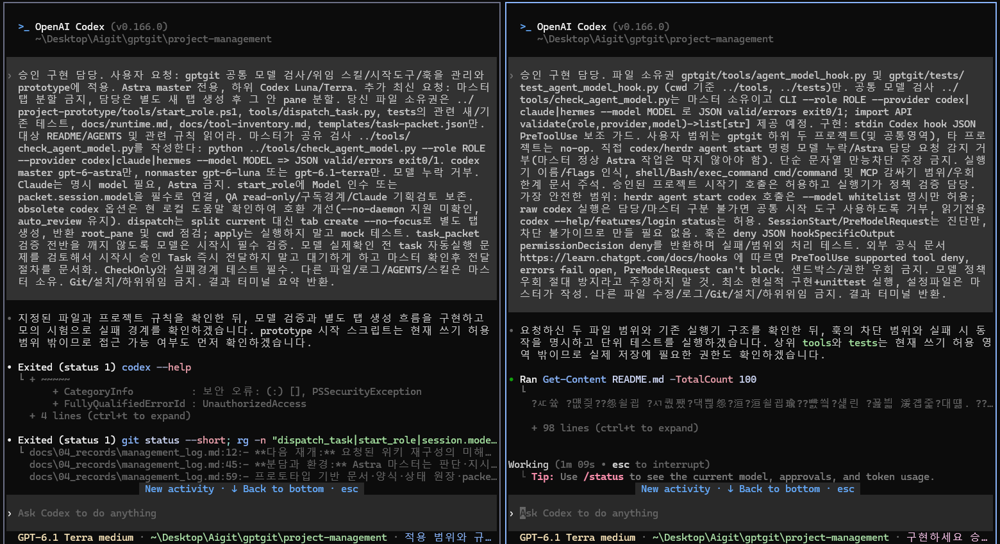
Task별 정확한 토큰과 구독 차감량은 측정하지 않았습니다.
그래서 비용 절감 효과를 비율로 표현하지 않고, 예상치는 예상치로 표시합니다.
| 상태 | 개선 내용 | 결과 또는 완료 기준 |
|---|---|---|
| 완료 | 역할별 모델 규칙, 시작 전 모델 검사, 담당 전용 새 탭 | prototype 회귀 58건, 공통 회귀 15건 통과. Luna 담당의 실제 시작과 대기 응답 확인 |
| 완료 | 금지 모델의 담당 시작 명령을 막는 훅 등록 | 두 프로젝트에서 각 1회, 금지된 시작 명령이 실행 전에 차단되는 것 확인. 다른 PC는 경로와 신뢰 등록 재확인 필요 |
| 시험 중 | 승인된 실행 안의 기록 자동 저장 | 시험 프로젝트 순서 문서에 반영: Task가 끝나면 실행 기록, Phase가 끝나면 작업기록 요약. 재지시 감소 효과는 아직 측정하지 않음 |
| 제안 | “멈출 사유가 없으면 다음 Task로” 진행 규칙 | 기록 자동 저장과 함께 10.25~28 기준 재지시 약 16건 감소(예상) |
| 시험 중 | 작업기록을 현재 상태와 과거 이력으로 분리 | 복원에 읽는 기록 약 6.5k → 2~3k 토큰(예상). 시험 프로젝트에 긴 과거 이력을 분리해 링크하도록 반영. 마스터 교대는 “창 50%” 고정 기준 대신 Task·Phase 경계에서 판단 |